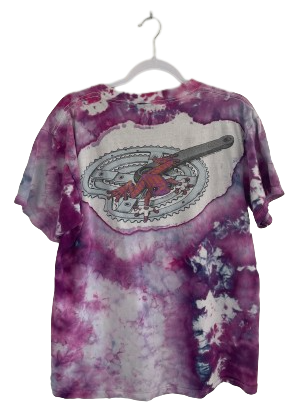
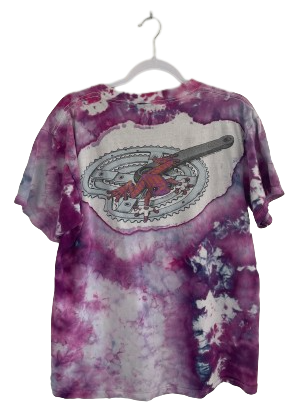

DATE OF DISCOVERY: OCTOBER 25, 2148
PLACE OF DISCOVERY: TOMPKINS SQUARE PARK
ORIGIN: AURORA, COLORADO
DESCRIPTION: PRIMAL WEAR PURPLE TIE DYE FROG
MATERIAL: 100% COTTON
PRODUCED IN: UNITED STATES
COLORS: PURPLE, BLUE, PINK, RED, GRAY, BLACK
SIZE: MEDIUM
Front side features Primal Wear frog logo on top left chest; back features same red and purple frog on top of bike gear. Shirt is completely tie dyed using purple, pink, and blue inks.